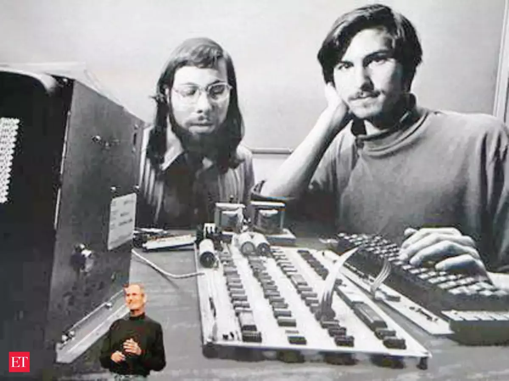

Key Takeaways. Steve Jobs and Steve Wozniak co-founded Apple in 1977,
introducing first the Apple I and then the Apple II. Apple went public in
1980 with Jobs the blazing visionary and Wozniak the shy genius executing
his vision. Executive John Scully was added in 1983; in 1985, Apple's board
of directors ousted the combative Jobs in favor of Scully. Away from Apple, Jobs
invested in and developed animation producer Pixar and then founded Next to create
high-end computers; Next eventually led him back to Apple. Jobs returned to Apple
in the late 1990s and spent the years until his death in 2011 revamping the company,
introducing the iPod, iPhone, and iPad, transforming technology and communication in the process.
